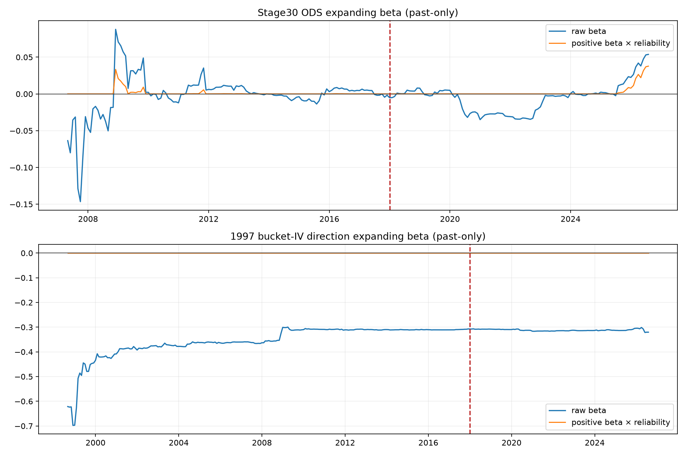

1997~2026 버킷 IV로 다시 본
Stage 30 ODS의 상태의존성
원본 XLSX를 훼손하지 않고 장기 옵션 비대칭, 구조변화, 거시 Fragility, VIX6 Stress, reliability shrinkage를 한 번에 검증한 결과다. 신호와 판정 기준은 결과 확인 전에 고정했다.
결론
피드백의 state-dependent alpha 가설은 현재 표본에서 지지되지 않았다. ODS의 초기·후기 IC 부호는 달라졌지만 구조변화 p값은 0.405였고, Macro Fragility와 VIX6 Stress interaction도 각각 p=0.779, p=0.725로 불명확했다.
Reliability Stage 31은 Sharpe를 0.0025 높이는 대신 CAGR과 MDD를 모두 훼손했다. 따라서 Fragility interaction도, Stage 31 reliability도 승격하지 않는다.
2007-04~2026-07, 무레버리지·롱온리·기존 SLSQP/VIX6 엔진 유지
1. XLSX에서 무엇을 읽었나
260829_옵션내재변동성.xlsx는 최근월물과 차근월물 두 시트로 구성되어 있다. 각 시트에는 CALL/PUT ATM, ITM1~4, OTM1~4 일별 IV가 들어 있으며 실제 관측은 1997-07-07부터 시작한다.
WingAsym_near = IV(PUT OTM2, 최근월) - IV(CALL OTM2, 최근월) BucketDirection_near = -WingAsym_near # Stage 30과 동일하게 양수=bullish
주 검정은 최근월 OTM2 하나로 고정했다. 차근월 OTM2와 최근·차근월 평균은 강건성 검정일 뿐 후보 선택에 쓰지 않았다. 다음 달 KOSPI200 수익률은 K200 최근월 선물 종가로 만들었고, 2000년 이후에는 현물 종가로도 교차확인했다.
2. 장기 버킷 IV 결과
| 구간 | BucketDirection IC | 표준화 beta | HAC p값 |
|---|---|---|---|
| 1997~2026 전체 | -0.138 | -1.94% | 0.098 |
| 1997~2006 | -0.177 | -3.42% | 0.116 |
| 2007~2017 | -0.103 | -0.05% | 0.951 |
| 2018~2026 | -0.089 | -1.72% | 0.086 |
원래 WingAsym의 부호로 읽으면 전체 IC는 +0.138이다. 풋 OTM2 IV가 상대적으로 높을수록 다음 달 수익률이 높았다는 뜻이다. 이는 단순 방향예측보다 공포 이후 위험프리미엄 또는 반등에 가깝다.
현물수익률로 바꿔도 최근월 IC -0.113, 차근월 -0.118, 두 월물 평균 -0.123으로 부호가 유지됐다. 선물 롤만으로 생긴 결과가 아니다.
3. Stage 30 ODS는 정말 구조적으로 바뀌었나
| 구간 | ODS score IC | 표준화 beta | HAC p값 |
|---|---|---|---|
| 2006~2026 전체 | 0.026 | 0.40% | 0.437 |
| 2007~2017 | -0.065 | -0.03% | 0.948 |
| 2018~2026 | 0.111 | 0.83% | 0.379 |
표본상으로는 분명 후기 개선이 보인다. 하지만 2018년 더미와 ODS×후기더미를 넣은 HAC 구조변화 검정의 p값은 0.405다. 장기 버킷 IV의 같은 검정도 p=0.355다. “후기에 좋아 보인다”와 “2018년에 구조가 바뀌었다”는 같은 말이 아니다.

각 시점의 beta는 그 월보다 먼저 실현된 자료만 사용한 expanding 추정이다. 붉은 점선은 2018-01이다.
4. Macro Fragility와 VIX6 상태
| Soft state | Stage 30 ODS 가중 IC |
|---|---|
| Goldilocks | 0.015 |
| Overheating | 0.015 |
| Slowdown | 0.011 |
| Stagflation | 0.088 |
| VIX6 저스트레스 | 0.025 |
| VIX6 고스트레스 | 0.024 |
Fragility = p(Slowdown) + p(Stagflation) Return = a + beta·ODS + delta·Fragility + gamma·ODS·Fragility + error
- Macro Fragility interaction: gamma 0.0803, p=0.779
- VIX6 Stress interaction: gamma -0.1300, p=0.725
두 interaction 모두 추정오차가 훨씬 크다. Slowdown·Stagflation에서 ODS가 음수로 바뀔 것이라는 예시도 재현되지 않았다. 이 상태에서 interaction 전략을 만들면 진단 결과가 아니라 자유도 추가가 된다.
5. Reliability shrinkage는 왜 실패했나
z = beta_hat / SE(beta_hat) Reliability = z² / (1 + z²) mu_adjustment = max(beta_hat, 0) · Reliability · ODS_score
식 자체는 합리적이고 임계값도 없다. 문제는 ODS slope의 증거가 너무 약했다는 데 있다. 전체기간 평균 reliability는 0.110, 중앙값은 0.0159였다. 기대수익 조정의 평균 절댓값이 0.000657에서 0.000174로 약 74% 줄었다.
결국 불확실한 알파만 덜어낸 것이 아니라 Stage 30의 수익 기여도 함께 줄였다.
6. 최종 성과
| 전략 | CAGR | Sharpe | MDD | Calmar |
|---|---|---|---|---|
| Stage 20 VIX6 | 9.397% | 0.987 | -14.015% | 0.671 |
| Stage 30 ODS | 9.782% | 0.980 | -13.599% | 0.719 |
| Stage 31 Reliability | 9.476% | 0.982 | -14.027% | 0.676 |
Stage 31은 Stage 30 대비 CAGR -0.306%p, Sharpe +0.0025, MDD -0.428%p다. 2,000회 블록 부트스트랩에서 CAGR 개선 확률은 13.7%, Sharpe 개선 확률은 58.9%였다.
운용·개발 판단
- 장기 버킷 IV를 Stage 30 방향 입력으로 추가하지 않는다.
- Macro Fragility 또는 VIX6 interaction을 추가하지 않는다.
- Stage 31 reliability 후보를 승격하지 않는다.
- 공식 기준은 Stage 20으로 유지한다.
- Stage 30은 CAGR과 MDD의 교환관계를 명시한 연구 변형으로 남긴다.
7. 무결성과 재현성
두 원본 XLSX의 분석 전후 SHA-256, 파일 크기, 수정시각이 동일하다. 모든 파생 CSV·PNG·JSON은 `strategies/stage31_long_iv_state_dependence/outputs`에만 저장했다.
- 옵션 IV SHA-256: 967f0a612eb8ccde36e47a5ad870e1a27c58bd43685dc9234ac4f7b46e403d6c
- K200 선물 SHA-256: 4d37798c636a4716b7a7d03b71549d7195067e35718635da0db2420f019d0818
본 검증은 과거 자료에 대한 연구 결과다. 구조변화·상태의존성의 부재를 영구적으로 증명하는 것이 아니라, 현재 표본에서 해당 가설을 채택할 증거가 부족하다는 판정이다.